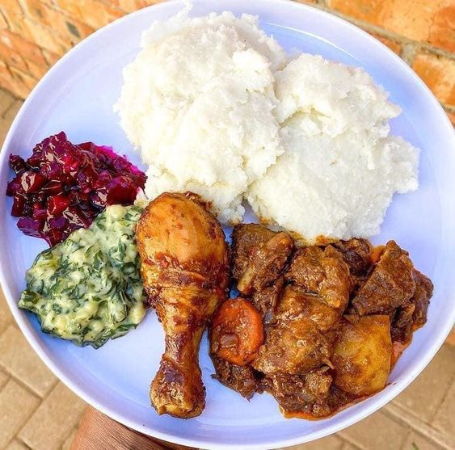

Nshima and Chicken Recipe

How to prepare Nshima and Chicken with a Vegetable side of your choice
Ingredients
Chicken Curry
- 3 tablespoons vegetable oil, divided
- 2 medium white onions, sliced into 1/4-inch half-moons
- 3 celery stalks, sliced 1/4-inch thick
- 4 garlic cloves, minced
- Kosher salt, to taste
- 1 (12-ounce) can tomato paste
- 5 pounds bone-in, skin-on chicken pieces
- 1/4 cup yellow curry powder
Nshima
- 2 cups Mealie Meal (fine-ground white cornmeal)
- 5 1/2 cups water
- 2 tablespoons unsalted butter or margarine (optional)
Steps
- Follow the Chicken Curry recipe and prepare it, then let it simmer
- Prepare Nshima
- Serve and Dig in!!